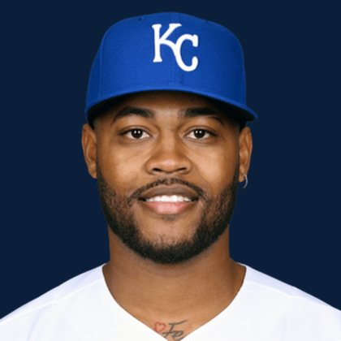

BASEBALLKEEP
Dynasty · Redraft · Diamond
Player File · 3B KC

Maikel Garcia
#11 · 3B · Kansas City Royals · age 26 · B/T RR · 6' 1" / 180 lbs · MLB debut 2022 · La Sabana, Venezuela
Keep avg73.13
# Boards23
BK Value1,690
Spread66–85
Hitting
| Year | G | AB | R | H | 2B | HR | RBI | SB | BB | SO | AVG | OBP | SLG | OPS |
|---|---|---|---|---|---|---|---|---|---|---|---|---|---|---|
| 2026 | 72 | 282 | 34 | 75 | 17 | 3 | 32 | 5 | 24 | 47 | .266 | .321 | .379 | .700 |
| 2025 | 160 | 595 | 81 | 170 | 39 | 16 | 74 | 23 | 62 | 84 | .286 | .351 | .449 | .800 |
The Keep#73BK 1,690
The Lineup#56BK 2,346
Redraft#72BK 1,722
Baseball Savant
Starcast · spray · pitch
Percentile ranks (Starcast) plus the official Savant spray chart for bats and pitch chart for arms. Open the full Baseball Savant page.
Batter · 2026
xwOBA
43
xBA
83
xSLG
29
xISO
14
xOBP
56
Barrels
15
Barrel %
21
EV
62
Max EV
70
Hard Hit %
48
K %
82
BB %
32
Whiff %
95
Chase %
87
Speed
59
Arm
74
OAA
91
Hits spray chart
Every Board
Spread 66–85 · 23 sources
| Source | Rank |
|---|---|
| RotoWire | 66 |
| FanGraphs The Board | 66 |
| Razzball | 69 |
| Enos Slaughter | 69 |
| CBS Sports | 71 |
| ESPN | 72 |
| NFBC ADP | 72 |
| Ottoneu | 72 |
| Mastersball | 72 |
| Yahoo Fantasy | 72 |
| ATC ROS | 72 |
| RotoGraphs Model | 74 |
| Baseball Prospectus | 74 |
| The Athletic | 74 |
| The Dynasty Dugout | 74 |
| Fantasy Baseballers | 74 |
| Baseball America | 74 |
| MLB Pipeline mix | 74 |
| Four-Seam Fantasy | 75 |
| Pitcher List | 76 |
| Dynasty League Baseball | 77 |
| FantasyPros Dynasty ECR | 78 |
| TDG Points | 85 |
On the Wire
Redraft Wire P25: Steals stream. Do not overthink the batting average.
BK News
On The Keep nearby — Jeremy Peña (#71) · Jac Caglianone (#72) · Drake Baldwin (#74) · Alec Burleson (#75)
All players · The Keep · BK News · The Lineup · Pitchers · Calculator